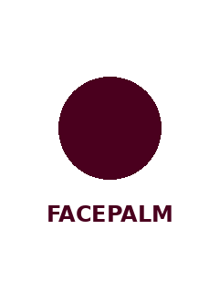

<!--
  _scene-base.html.tmpl — anchor-grid scene skeleton.
  Invariant bottom half: kicker → hero → body → chip → presenter.
  Only the top half (body anchor 3) changes shape per archetype.
-->
<template>
  <style>
    /* @tokens:start — generated by scripts/prepare.py from PARAMS.json. Do not edit by hand. */
:root {
  --w: 1080px; --h: 1920px;
  --ground: #EDE3D6; --ink: #0C0A0B;
  --accent: #6F0017; --secondary: #CEDBD1;
  --tertiary: #0A172A; --quaternary: #DCD5E1;
  --on-ink: #EDE3D6; --on-accent: #EDE3D6;
  --on-tertiary: #EDE3D6; --on-quaternary: #0C0A0B;
  --paper: #FFFDF8; --paper-ink: #16110F;
  --paper-muted: #7A6B60; --paper-bar: #F1E9DC;
  --font-display: "Anton"; --font-slab: "Archivo Black";
  --font-mono: "Space Mono";

  --margin-x: 60.5px;
  --kicker-top: 128.1px;
  --hero-top: 193.2px;
  --card-top: 577.9px;
  --card-w: 960.0px;
  --card-h: 470.4px;
  --card-radius: 16px;
  --chip-top: 1128.0px;
  --chip-h: 86.0px;
  --chip-radius: 999px;
  --chip-pad: 38.0px;
  --presenter-top: 1217.3px;
  --presenter-h: 794.9px;
  --presenter-x: 223.6px;

  --size-hero: 180px;
  --odo-step: 180px;
  --hero-lines: 2;
  --hero-band: 316.6px;
  --gap: 48.00px;
  --size-hero-max: 270px;
  --size-kicker: 32.4px;
  --size-chip: 36.0px;
  --size-body: 28.1px;
  --lh-display: 0.88;
  --tracking-label: 0.2em;
  --halftone: 0.1;
  --border-w: 3.0px;
  --dot-pitch: 7.0px;
  --dot-r: 1.10px;
  --bar-h: 62.0px;
  --bar-pad: 22.0px;
  --bar-gap: 14.0px;
  --card-pad: 24.0px;
  --dash-w: 46.0px;
  --dash-h: 5.0px;
  --dash-gap: 18.0px;
  --glow: 699.8px;
  --glow-alpha: 0.20;
  --hard-shadow: 14px 16px 0;
  --safe-top: 8.75%;
  --safe-bottom: 78.10%;
}
/* @tokens:end */

    @font-face { font-family: "Anton"; src: url("../assets/fonts/Anton-Regular.ttf"); }
    @font-face { font-family: "Archivo Black"; src: url("../assets/fonts/ArchivoBlack-Regular.ttf"); }
    @font-face { font-family: "Space Mono"; src: url("../assets/fonts/SpaceMono-Regular.ttf"); font-weight: 400; }
    @font-face { font-family: "Space Mono"; src: url("../assets/fonts/SpaceMono-Bold.ttf"); font-weight: 700; }

    #root { position: absolute; inset: 0; overflow: hidden;
      font-family: var(--font-mono); -webkit-font-smoothing: antialiased; }

    /* Background field chosen by ONE attribute */
    #root[data-field="ground"]    { background: var(--ground);    color: var(--ink); }
    #root[data-field="accent"]    { background: var(--accent);    color: var(--on-accent); }
    #root[data-field="ink"]       { background: var(--ink);       color: var(--on-ink); }
    #root[data-field="secondary"]  { background: var(--secondary);  color: var(--ink); }
    #root[data-field="tertiary"]   { background: var(--tertiary);   color: var(--on-tertiary); }
    #root[data-field="quaternary"] { background: var(--quaternary); color: var(--on-quaternary); }

    .dots { position: absolute; inset: 0; opacity: var(--halftone); color: currentColor;
      background-image: radial-gradient(currentColor var(--dot-r),
        transparent calc(var(--dot-r) + .1px));
      background-size: var(--dot-pitch) var(--dot-pitch); }

    /* ANCHOR 1 · kicker */
    .kicker { position: absolute; left: var(--margin-x); top: var(--kicker-top);
      font-size: var(--size-kicker); font-weight: 700;
      letter-spacing: var(--tracking-label); text-transform: uppercase; opacity: 0; }
    .kicker i { display: inline-block; width: var(--dash-w); height: var(--dash-h);
      background: var(--accent); vertical-align: middle; margin-right: var(--dash-gap); }
    #root[data-field="accent"] .kicker i { background: var(--on-accent); }
    #root[data-field="tertiary"] .kicker i { background: var(--accent); }

    /* ANCHOR 2 · hero */
    .disp { font-family: var(--font-display); text-transform: uppercase;
      line-height: var(--lh-display); letter-spacing: -.01em; }
    #s2-hero { position: absolute; left: var(--margin-x); top: var(--hero-top);
      font-size: var(--size-hero); opacity: 0; max-width: 92%; }

    /* ANCHOR 3A · card (card-led) */
        #s2-card { position: absolute; left: var(--margin-x); top: var(--card-top);
      width: var(--card-w); min-height: calc(var(--card-h) * .80);
      max-height: var(--card-h); background: var(--paper);
      color: var(--paper-ink); border: var(--border-w) solid var(--ink);
      border-radius: var(--card-radius); overflow: hidden; opacity: 0;
      box-shadow: var(--hard-shadow) color-mix(in srgb, var(--ink) 16%, transparent); }
    #s2-card .bar { height: var(--bar-h); display: flex; align-items: center;
      gap: var(--bar-gap); padding: 0 var(--bar-pad);
      border-bottom: var(--border-w) solid var(--ink);
      background: var(--paper-bar); color: var(--paper-ink); }
    #s2-card .bar .f { font-size: var(--size-body); font-weight: 700; }
    #s2-card .bar .t { margin-left: auto; font-size: var(--size-body);
      letter-spacing: .1em; color: var(--paper-muted); }
    #s2-card .body { padding: var(--card-pad) var(--card-pad) 0; }
    #s2-card .row { display: flex; gap: calc(var(--bar-gap) * 1.3);
      padding: calc(var(--card-pad) * .3) 0; font-size: var(--size-body);
      line-height: 1.5; }
    #s2-card .row .ln { width: calc(var(--size-body) * 2); text-align: right;
      color: var(--paper-muted); flex: none; }
    
    /* ANCHOR 3B · stat (stat-led) */
    
    /* ANCHOR 3C · type-only (type-led) */
    
    /* ANCHOR 4 · chip — INVARIANT position */
    #s2-chip { position: absolute; left: var(--margin-x); top: var(--chip-top);
      height: var(--chip-h); display: flex; align-items: center;
      gap: calc(var(--bar-gap) * 1.4); padding: 0 var(--chip-pad);
      border-radius: var(--chip-radius); background: var(--ink);
      color: var(--on-ink); font-size: var(--size-chip); font-weight: 700;
      letter-spacing: .04em; text-transform: uppercase; opacity: 0; }
    #s2-chip b { width: calc(var(--chip-h) * .19); height: calc(var(--chip-h) * .19);
      border-radius: 50%; background: var(--accent); display: block; }
    #root[data-field="ink"] #s2-chip { background: var(--accent);
      color: var(--on-accent); }
    #root[data-field="ink"] #s2-chip b { background: var(--on-accent); }

    /* ANCHOR 5 · presenter — INVARIANT position, cropped by frame */
    #s2-char { position: absolute; left: var(--presenter-x);
      top: var(--presenter-top); width: calc(var(--w) - var(--presenter-x));
      height: var(--presenter-h); opacity: 0; }
    #s2-char img { width: 100%; height: 100%; object-fit: contain;
      object-position: bottom center; }
    #s2-glow { position: absolute; left: var(--presenter-x);
      top: var(--presenter-top); width: var(--glow); height: var(--glow);
      border-radius: 50%; opacity: 0;
      background: radial-gradient(circle,
        color-mix(in srgb, currentColor calc(var(--glow-alpha) * 100%),
        transparent) 0%, transparent 70%); }
    #root[data-field="ink"], #root[data-field="tertiary"] { --glow-alpha: 0.42; }
  </style>

  <script>window.__sceneTweens = window.__sceneTweens || [];</script>
  <div id="root" data-composition-id="s2-animation" data-cover="0"
       data-field="ground" data-width="1080" data-height="1920">
    <div class="dots"></div>
    <div id="s2-glow"></div>

    <div class="kicker" id="s2-kicker"><i></i>TOR</div>
    <div class="disp" id="s2-hero">Instead, Tor apne</div>

        <div id="s2-card">
      <div class="bar"><span class="f">TOR Architecture</span>
        <span class="t">Verified path</span></div>
      <div class="body"><div style="position:absolute;inset:0;background:var(--maroon);display:flex;align-items:center;justify-content:center;"><svg width="600" height="400" viewBox="0 0 600 400" xmlns="http://www.w3.org/2000/svg"><polyline points="80,200 220,200 360,200 500,200 560,200" stroke="var(--ink-soft)" stroke-width="3" fill="none" stroke-dasharray="10 6" opacity="0.5"/><circle cx="80" cy="200" r="20" fill="var(--maroon-dark)" stroke="var(--cream)" stroke-width="3"/><circle cx="220" cy="200" r="20" fill="var(--maroon-dark)" stroke="var(--cream)" stroke-width="3"/><circle cx="360" cy="200" r="20" fill="var(--maroon-dark)" stroke="var(--cream)" stroke-width="3"/><circle cx="500" cy="200" r="20" fill="var(--maroon-dark)" stroke="var(--cream)" stroke-width="3"/><circle cx="560" cy="200" r="20" fill="var(--maroon-dark)" stroke="var(--cream)" stroke-width="3"/><text x="80" y="225" text-anchor="middle" fill="var(--cream)" font-family="var(--font-display)" font-weight="950" font-size="14">USER</text><text x="220" y="225" text-anchor="middle" fill="var(--cream)" font-family="var(--font-display)" font-weight="950" font-size="14">ISP</text><text x="360" y="225" text-anchor="middle" fill="var(--cream)" font-family="var(--font-display)" font-weight="950" font-size="14">ENTRY</text><text x="500" y="225" text-anchor="middle" fill="var(--cream)" font-family="var(--font-display)" font-weight="950" font-size="14">EXIT</text><circle cx="80" cy="200" r="8" fill="var(--gold)"><animateMotion path="M 80,200 L 220,200 L 360,200 L 500,200 L 560,200" dur="4s" repeatCount="indefinite"/></circle></svg></div></div>
    </div>
    
    
    
    <div id="s2-chip"><b></b>network se teen</div>
    <div id="s2-char"></div>
  </div>

  <script>
    const tl = gsap.timeline({ paused: true });
    const cover = document.getElementById("root").dataset.cover === "1";
    const bodyAt = cover ? 0.05 : 0.45;
    if (cover) gsap.set(["#s2-kicker", "#s2-hero", "#s2-char", "#s2-glow"],
                        { opacity: 1, x: 0, y: 0, scale: 1 });

    tl.fromTo("#s2-kicker", { y: cover ? 0 : -26, opacity: cover ? 1 : 0 },
              { y: 0, opacity: 1, duration: cover ? .01 : .32, ease: "power3.out" }, .04);
    tl.fromTo("#s2-hero", { scale: cover ? 1 : 1.3, y: cover ? 0 : 44,
              opacity: cover ? 1 : 0 },
              { scale: 1, y: 0, opacity: 1, duration: cover ? .01 : .30,
              ease: "power4.out" }, .30);
    tl.fromTo("#s2-glow", { opacity: cover ? 1 : 0 },
              { opacity: 1, duration: cover ? .01 : .45, ease: "power2.out" }, .30);
    tl.fromTo("#s2-char", { y: cover ? 0 : 46, scale: cover ? 1 : .92,
              opacity: cover ? 1 : 0 },
              { y: 0, scale: 1, opacity: 1,
              duration: cover ? .01 : .34, ease: "power3.out" }, .34);

    /* #js:A */
    tl.fromTo("#s2-card", { y: 56, scale: .95, opacity: 0 },
              { y: 0, scale: 1, opacity: 1, duration: .32, ease: "power3.out" }, bodyAt);
    /* /#js:A */

    /* #js:B */
    tl.fromTo("#s2-odo", { y: 56, opacity: 0 },
              { y: 0, opacity: 1, duration: .32, ease: "power3.out" }, bodyAt);
    document.querySelectorAll("#s2-odo .col").forEach((col, i) => {
      tl.to(col.querySelector(".strip"),
            { y: `-=${+col.dataset.digit || 0}em`,
              duration: 0.95 - i * 0.05, ease: "power2.inOut" },
            0.55 + i * 0.05);
    });
    tl.fromTo("#s2-support", { y: 24, opacity: 0 },
              { y: 0, opacity: 1, duration: .3, ease: "power2.out" }, 1.25);
    /* /#js:B */

    /* #js:C */
    tl.fromTo("#s2-lines", { y: 44, opacity: 0 },
              { y: 0, opacity: 1, duration: .30, ease: "power4.out" }, bodyAt);
    /* /#js:C */

    tl.fromTo("#s2-chip", { y: 30, opacity: 0 },
              { y: 0, opacity: 1, duration: .26, ease: "power3.out" },
              cover ? 0.65 : 0.18);

    tl.to("#s2-hero", { y: -14, duration: .7, ease: "power1.inOut" }, 5.2);

    (window.__sceneTweens || []).forEach(function (fn) {
      try { fn(tl); } catch (e) { console.error(e); }
    });

    window.__timelines["s2-animation"] = tl;
  </script>
</template>
